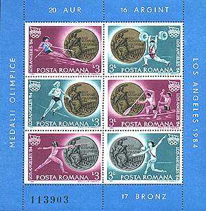
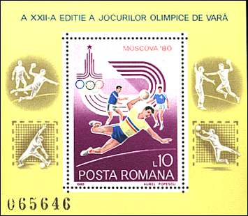
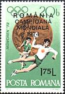
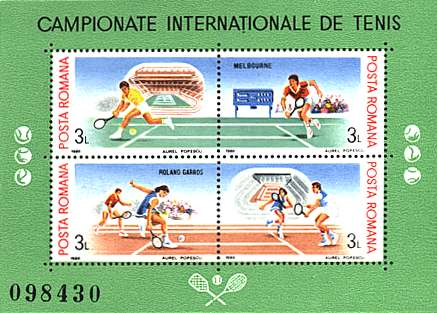
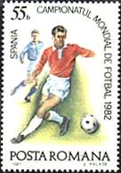
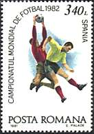
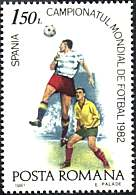
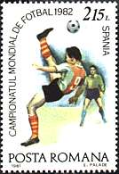
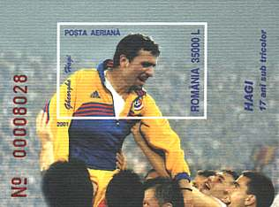
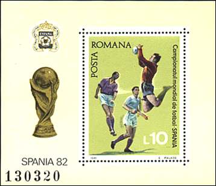

Sport on Romanian Stamps
The
sporting activity has a long tradition in Romania and this tradition was
illustrated by
many issues, dedicated to different sportive disciplines. We will limit ourselves to some
of exceptional results of Romanian sport people during the last
decades.
The most outstanding Romanian sportive personality was without doubt Nadia
Comaneci, the revelation of the Olympic Games in Montreal, 1976, and the
first gymnast to be recompensed by the maximal notes by all judges in a
competition of a highest level. The sheet displayed below, issued shortly after
the Olympic games from Montreal, was dedicated to her, even if an anonymous person is shown.
 |
 |
The success of Nadia Comaneci was the coronation of a long series of excellent results of Romanian sportsmen at Olympic Games, as shown by a later sheet, issued in 1984, and dedicated to the 20 gold, 16 silver and 17 bronze medals won in Los Angeles.
 |
 |
The Romanian male players dominated during two decades the handball scene, and won four world championship titles. Players like Moser, Hnat, Stanga or Gatu were the heroes of several youth's generations, mine included. The above stamp was overprinted with the text "Romania Campioana Mondiala 1974" (World Champion). The sheet was issued in 1980 and commemorates the Romanian participation at the Olympic Games in Moscow.

One of the most talented tennis players worldwide was the Romanian Ilie Nastase, the winner of many Grand Slam tournements. Together with Ion Titiac (later a very successful sportive manager) he participated three times at the final play team of the Davis Cup. The above sheet, issued in 1988, is dedicated to Grand Slam tournaments in Melbourne and Roland Garros, both won by Ilie Nastase during his glorious career.
 |
 |
 |
 |
Football (soccer) was and still is the most popular sport in Romania. The communist regime forbade to most successful of Romanian player to joining of foreign clubs, and for this reason great names of the Romania football, like Ozon, Parcalab or Dobrin were less known outside Romania's borders. The most successful football team ever was that of Steaua Bucharest, that won the most prestigious of European trophies, the European Champions Cup.
 |
 |
The Romanian national football team had excellent results in the European and World Championships, and this also thanks to its outstanding player Gheorghe Hagi. Hagi is the only sportsman whom the Romanian Post dedicated a postal issue. The sheet, issued in 2001 (above, on the left), presents the moment of Hagi's retirement from the National football team, after 17 years of loyal services. The other football stamps and the sheet on this page were issued in commemoration of the World Championship in Spain, in 1982.
| Created: 09/02/01. Revised: 09/10/01. Copyright © 2001 by Victor Manta, Switzerland. All rights reserved in all countries. |